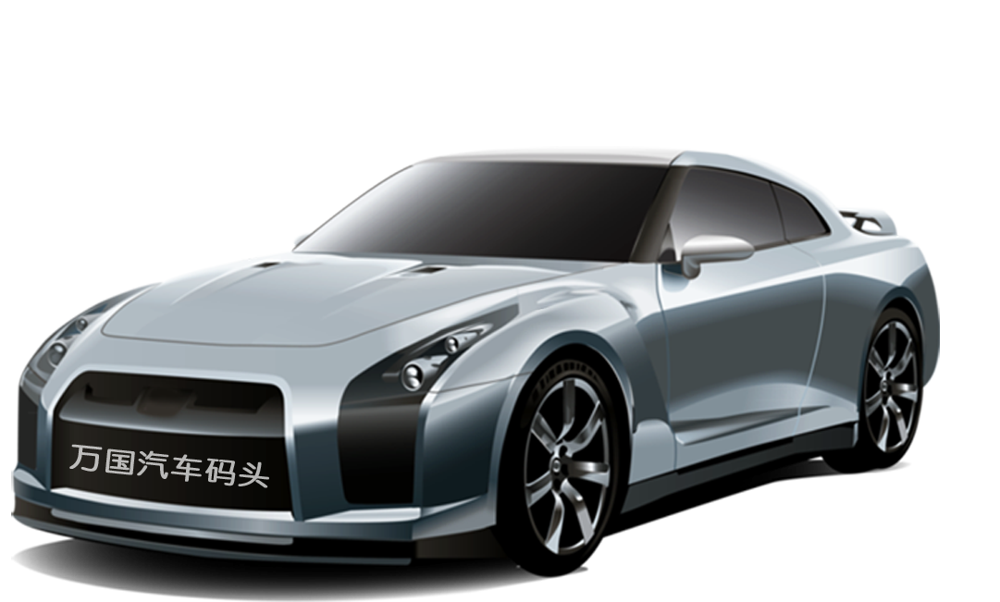

购车送保养 享双重优惠

买车·找我们
- 活动时间：
- 2018年4月1日开始-2018年6月30日
- 活动流程：
- 1、可通过平台线上或由本平台设立的对应的POS点进行交易。
- 2、交易过程，如出现不可控因素，产生交易退换，则本活动所附赠的超值养车大礼包同时由系统自动收回（如已产生使用情况，则需按价补齐所使用部分。）
- 活动提醒：
- 1、保养大礼包为我方提供的服务，不做退现返现，只做为服务或商品折扣优惠依据使用。
- 2、本活动只适用于本平台，二手车交易类目中的汽车类商品。 周边商品及配件商品交易不能获得超值养车大礼包。
- 3、本活动最终解释权归万国汽车码头（http://www.wanguo .net/）所有。
- 咨询热线：400-0998-058(周一至周日08:30-20:30)
- 地址：太原市晋源区万国汽贸园
-
关注更多优惠